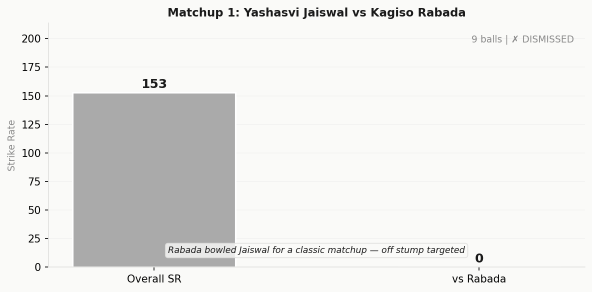
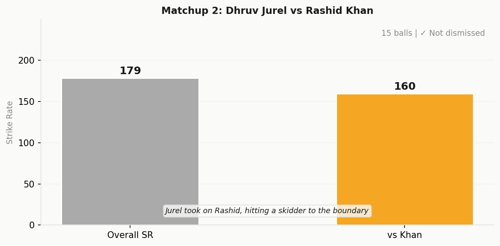
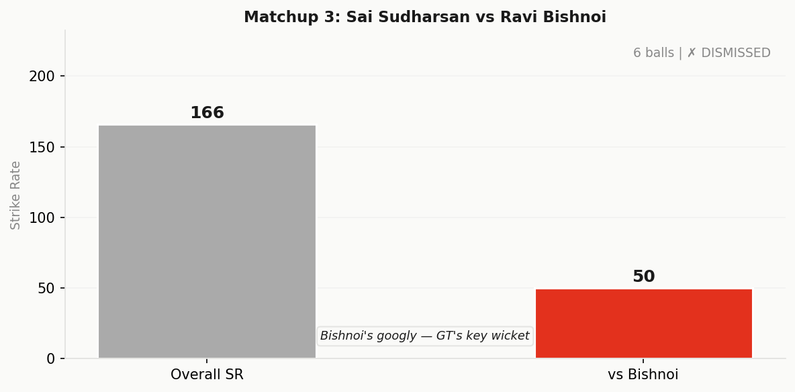
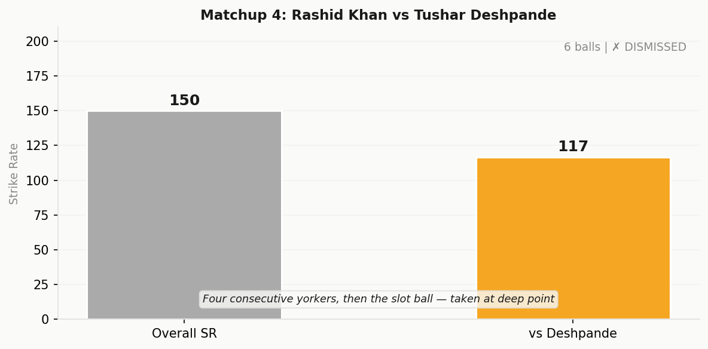

An 8.0 Humdinger Score tells you everything: this was a match that folded and unfolded itself three times before breakfast. GT were 64% favourites at 127/2 in the 12th over. They were favourites again at 161/7 when Rashid Khan and Kagiso Rabada staged what looked like a match-winning revival. And then, with 15 needed off 12 balls, they became heavy favourites once more. Three different narratives. One result.
RR's 63.2 score reveals a team that won with superior batting intent (17.5 SR Dominance) and a strangling bowling attack (8.8 Dot Dominance, 8.4 Bowling SR). The alarm: 13 wides. Rajasthan's disciplinary score of 1.0 on extras is a black mark. GT were worse off — 60.2 reflects a team that couldn't convert pressure into wickets (5.0 Wicket Punch) and couldn't sustain chase momentum (2.0 Economy Squeeze on defence).

Jaiswal walked in at the end of an explosive powerplay — 70 runs in 6.2 overs. Sooryavanshi had already taken 27 off 16, a statement of intent. When Rabada came into the attack in the 7th over, Jaiswal was in rhythm, backing away to leg, looking to manufacture room on the off side. The GT seamer countered by returning the ball to off stump, accepting the risk of full length in favour of control.
For 5 overs, it was a standoff. Jaiswal faced 19 balls from Rabada and scratched out 15 runs — a 78.9 SR against one of the finest death bowlers in the IPL. The average Test-level technique was evident: Jaiswal didn't chase the width, played straighter than his powerplay patterns, respected the angle.
But at 12.3, with Jaiswal at 55 off 36, Rabada pushed the ball fuller and tighter to off stump. Jaiswal, still looking to back away, closed his bat face too early. The edge carried to slip. Rabada had his moment.
Over 12.3 (Rabada to Jaiswal) Off stump thumped, and Rabada has the last laugh. The dismissal that broke RR's momentum.
RR had just breached 126 runs. They would add 84 more in the remaining 7.3 overs. That edge cost them momentum at a critical juncture. Rabada finished with 2/42 — respectable, but in a match where Bishnoi took 4/41 and Deshpande closed out a chase, Rabada's moment felt like a near-miss.

This is where Jurel made his statement. At 24 off 15 balls against Rashid, Jurel was operating at a 160 SR in a powerplay he didn't even open in. The RR middle-order batter came into bat at 126/2, two wickets already gone, and proceeded to accelerate on a bowler widely regarded as the best leg-spinner in T20 cricket.
Rashid bowled four overs and went for 39 runs. Against him, Jurel made one shot that became the centerpiece of his 75: a wicket-to-wicket skidder, the kind of delivery Rashid uses to tighten the noose. Instead, Jurel straight-batted it through the line for four. The ball never left the turf. The shot defied the conventional wisdom that you back away from Rashid; instead, Jurel went down the ground.
By the 19th over, Jurel had compiled 75 off 42 balls. His SR of 178.6 across the entire innings was the second-highest of the night. His boundaries came from orthodox positions — drives through cover, lofts over mid-on, pulls off short deliveries. He didn't rely on a single boundary-making innovation. He was simply better.
Rabada, who had earlier dismissed Jaiswal, came back for the death. The final over brought Jurel's downfall: a banged-in short ball outside off, and Jurel fended it away. Rabada finished his comeback over: 4-0-42-2. Jurel had made his 75. It was enough.

Sudharsan was the reason GT felt like they could win. He came in at 78/1, with Kushagra departing, and found immediate rhythm against the RR bowlers. His 73 off 44 came at a 165.9 SR — aggressive without being reckless. At 127/2 in the 12th over, with Buttler accelerating beside him, Sudharsan had just crunched 29 runs off 4 overs (overs 10-13). GT were 64% favourites. The equation was simple: Sudharsan had brought them in range. Finish the job.
Ravi Bishnoi had other plans.
In the 10th over, Bishnoi was brought on to break the momentum. Sudharsan faced six balls. On the first, Bishnoi tossed up a googly — the classical variation against a batter looking to work the leg-spinner into the leg side. Sudharsan didn't read it. The ball gripped, ripped past his bat, and struck him on the pad. No LBW given. On the next delivery, Bishnoi tried the same: dragged short, asking the batter to hit from short range. Sudharsan swiped. The contact was thin. It flew to deep backward square leg, where Jurel was waiting.
Over 10.4 (Bishnoi to Sudharsan) Shanked and taken! Big, big moment in the game. Sudharsan's dismissal the moment everything changed for GT.
In 11 deliveries, Bishnoi had claimed the anchor. And his work was far from done.

By the 19th over, Rashid Khan and Kagiso Rabada had scripted one of the most audacious partnerships of the night. They came together at 161/7 in the 16th over, with 50 runs on the board and five overs to play. 50 off 30. The task felt immense. It wasn't. Over the next three overs, Rashid and Rabada added 43 runs. At the end of the 19th over, GT needed 15 off the last over.
Tushar Deshpande took the ball.
The first delivery was a wide yorker outside off. Called a wide. The second was tighter, full length, asking Rashid to dig it out. The third came in hard, a yorker aimed at the stumps. Rashid couldn't get bat to it. The fourth was another yorker, wide of off stump. Rashid left it. The fifth delivery saw Rashid attempt to create room. The yorker was full, and Rashid sliced it flat. Archer was positioned at deep point, and he held the catch.
Over 20.5 (Deshpande to Rashid Khan) Deshpande is having the night of his life under the Ahmedabad lights! Four consecutive yorkers, and Rashid Khan can only slice the fifth to the boundary fielder. The match-clincher.
Three runs off the final over. Rabada didn't face a ball in the final two deliveries. Rajasthan won by 6 runs. Deshpande had authored the closing lines, with Archer setting the stage in the penultimate over by denying Rabada the full toss that might have changed everything — the first ball of Archer's 19th over should have been a full toss, and Rabada, desperate for boundaries, missed it completely.
GT went from 127/2 to 133/5 in the space of three overs. Bishnoi took three of those five wickets. Win probability swung from 0.64 to 0.35. Sudharsan's dismissal at 10.4 was the entry point; Bishnoi's second spell closed the window. In 18 deliveries, he unraveled the chase.
From 161/7 with 43 required, these two battered 43 runs off 16 balls in three overs. At one stage, GT needed just 15 off 12. Win probability flipped from 0.20 back to 0.81. The partnership was explosive, high-risk, and nearly successful. Archer and Deshpande's death bowling — not the batsmen's failure — killed the momentum.
10 off the 19th (Archer's over, with one full toss Rabada missed). 3 off the 20th (Deshpande's yorker special). 13 runs bled from the chase in the final 24 balls. Win probability dropped from 0.81 to 0.02 in two overs. RR held by the narrowest margins.
Over 10.4 stands as the single most consequential delivery of the match. Before it, GT had the upper hand. After it, they were on the back foot.
Sudharsan came to the crease at 78/1. He had compiled 73 runs across 44 balls. He had just added 29 off four overs with Buttler beside him. GT were tracking 205+ runs. The powerplay had been efficient (78 off 7.6 overs at 151 SR). The middle overs had seen Buttler and Sudharsan establish themselves. Rashid Khan was waiting in the wings, but at that moment, the narrative was entirely GT's.
Bishnoi's googly at 10.4 changed the axis of the match. Win probability shifted from 64% in GT's favour to 35% in two overs. By over 13.1, when Bishnoi removed his fourth batter (Tewatia, caught at short fine leg off a legbreak), the swing had become irreversible. GT's probabilities had collapsed to 20%.
What made the moment more significant wasn't just the wicket itself, but its timing. Sudharsan was the anchor. He wasn't a pinch hitter; he was the innings' foundation. His dismissal signaled not just the loss of a run-maker, but the loss of a batting mentality. After Sudharsan fell, the sequence of collapses was rapid: Phillips (googly to midwicket), Sundar (legbreak to midwicket), Tewatia (caught short fine leg). Three more wickets in nine balls. The chase folded.
The inflexion point wasn't a six or a boundary. It was the exact moment when GT's probability of victory — already high at 64% — became secondary to RR's bowling intent. Bishnoi made it crystal clear: he wasn't going to allow Sudharsan to pilot the chase.
Ravi Bishnoi bowled four overs. He took four wickets. He conceded 41 runs. His figures were 4-0-41-4, and they define the match as much as any batting performance.
The first phase (overs 10–11) was about establishing boundaries. Bishnoi bowled tight lines, mixed his pace through the air, and relied on Rajasthan's slip fielders to be awake. Sudharsan fell to a googly played into the hands of deep backward square leg. It wasn't a classical dismissal; it was a batter out of rhythm against a bowler who had changed the rhythm.
The second phase (overs 12–13) was where Bishnoi's magic happened. Phillips came in to accelerate. He had accumulated 19 off 12 — a decent rate for the stage of the match. Bishnoi tossed up a googly, wider outside off. Phillips played across the line, looking to slog-sweep. The googly turned sharply past his bat, and he was bowled. Midwicket. Next ball: Sundar. Another googly, another batter caught in two minds, another catch at short midwicket.
Over 12.1–12.3 (Bishnoi) Two wickets in two balls. Phillips and Sundar both falling to the googly. The moment Bishnoi seized the match.
By the 13th over, Tewatia walked out. He was a pinch hitter, someone meant to accelerate in the final overs, not a stabilizing force. Bishnoi mixed a legbreak into the sequence — variation that was earned through the previous deliveries. Tewatia played across the line, and the legbreak hit him on the pads. No lbw. But the very next delivery, Bishnoi went short, and Tewatia, desperate for runs, swiped it fine. Jurel, at short fine leg, held the catch.
Four wickets. 18 deliveries. Eight balls in overs 12 and 13 where Bishnoi removed three batters. The spell was surgical. It was also the most consequential sequence of the match. After Bishnoi's four overs, GT's chase had fundamentally changed from "probable victory" to "survival." The batters had shifted from aggression to desperation. Rashid Khan and Rabada's revival in the final overs was born from this desperation — they had no choice but to hit out.
Bishnoi's match-fixing performance wasn't about pace or seam. It was about understanding when a batter was vulnerable, when to widen the gap, when to float the googly, when to slip in a legbreak. It was about reading the match state and asserting control at the precise moment when GT felt most in control.
| Metric | RR | GT |
|---|---|---|
| Total Runs | 210/6 | 204/8 |
| Powerplay Runs (0–6) | 70 | 54 |
| Middle Overs Runs (7–15) | 90 | 73 |
| Death Overs Runs (16–20) | 50 | 77 |
| Strike Rate | 157.5 | 153.0 |
| Boundary Count (4s) | 18 | 15 |
| Boundary Count (6s) | 8 | 7 |
| Dot Percentage | 33.8% | 31.6% |
| Wickets Lost | 6 | 8 |
| Wides Conceded (Bowling) | 13 | 6 |
RR's advantage came not from a single killer blow, but from compounding superiority across phases. They won the powerplay decisively (70 vs 54). They won the middle overs despite Sudharsan's brilliance (90 vs 73). They lost the death overs but made enough in the first 15 — the 50 runs from overs 16–20 was calculated batting, not desperate slogging. The 13 wides are the statistical blemish, but they came early and were absorbed. By the 20th over, RR had structured their innings to endure any onslaught.
GT's 77 runs in the death overs tell a different story. Those were not the runs of a team chasing down a total comfortably. They were the runs of a team that had collapsed from 127/2 to 133/5, realized the match was slipping, and threw everything at the final overs. Rashid Khan's 24 off 16 and Rabada's 23 off 16 were acts of desperation dressed up as heroics. They nearly worked. Six runs said they didn't.
RR Burn Rate
Overs 0–6 (Powerplay): 70 runs at 175 SR. Jaiswal and Sooryavanshi executed the blueprint — aggressive batting against new-ball bowlers, taking calculated risks, and establishing intent. Sooryavanshi's 31 off 18 set the tone. By the end of the powerplay, RR had already dictated terms.
Overs 7–15 (Middle): 90 runs at 150 SR. This is where the middle-order structure emerged. Jaiswal and Jurel added a 56-run partnership after Sooryavanshi's exit. Jurel's acceleration — 75 off 42 — was the centerpiece. The Jurel-Hetmyer-Parag sequences in overs 13–15 added runs despite constant bowling changes. By over 15, RR had 160 on the board. They needed 50 off the final five, and they had the hitters in place.
Overs 16–20 (Death): 50 runs at 125 SR. This phase showed maturity. Jurel fell in over 19.3 after collecting 75. Jadeja came in and, alongside Archer, batted for survival. The final 39 runs between Jurel and Jadeja across overs 16–19 established the platform. Archer's unbeaten runs in the final over added the final touch. It wasn't explosive; it was calculated. They had already built the tower.
GT Burn Rate
Overs 0–6 (Powerplay): 54 runs at 135 SR. Kushagra and Sudharsan played the anchor role. 18 and 14 respectively, combining for a 32-run opening partnership before Kushagra fell to Bishnoi. The powerplay lacked RR's aggression. Prasidh Krishna conceded 43 off 4, but it wasn't enough to create early dominance.
Overs 7–15 (Middle): 73 runs at 121.7 SR. Sudharsan accelerated, compiling 73 across 44 deliveries. He brought stability and run-making in equal measure. Buttler arrived and hit 26 off 14. By over 12, GT had reached 127/2, needing 83 off 8 overs. It was a very gettable chase. Bishnoi's intervention changed that. The middle overs ended with GT at 165/6 after 15 overs — 45 runs across 9 deliveries were lost to Bishnoi's spell (overs 10–13), and the subsequent collapses meant they never recovered the momentum.
Overs 16–20 (Death): 77 runs at 154 SR. This phase was defined by heroics born of necessity. Rashid Khan and Rabada's 43-run partnership dominated. Rashid's 24 off 16 and Rabada's 23 off 16 represented a team that had abandoned calculation in favour of explosive batting. It almost worked. But the final two overs — Archer's 10-run concession and Deshpande's 3-run finale — meant that even the heroics weren't enough.
RR's 210/6 was built on partnerships and phase management. The Jaiswal-Sooryavanshi opening (70 off 6.2 overs) set the foundation. The Jaiswal-Jurel consolidation (56 off 6 overs) stabilized. The Jurel-Hetmyer-Parag-Jadeja sequences in the middle and death ensured no single dismissal derailed the total. The final 39 off 3.2 overs between Jurel and Jadeja showed that even when individual wickets fell, there was always a batter ready to continue the assault. Rabada and Deshpande conceded 42 and 34 runs respectively — the main attacking threats for GT were neutralized by a batting order that refused to back down.
GT's 204/8 was the opposite: a house built on a cracked foundation. Sudharsan's 73 off 44 was the load-bearing wall. The powerplay with Kushagra gave direction, but it wasn't aggressive enough. When Sudharsan fell to Bishnoi at 10.4, the foundation cracked. The subsequent collapses (Phillips, Sundar, Tewatia all fell in the 12th-13th over sequence) were aftershocks. Rashid and Rabada's revival was an attempt to rebuild, but they were working with only the top three overs to do it. The architecture never recovered its original intent.
Critechery Cricket Analytics | IPL 2026 Match 9 | April 4, 2026